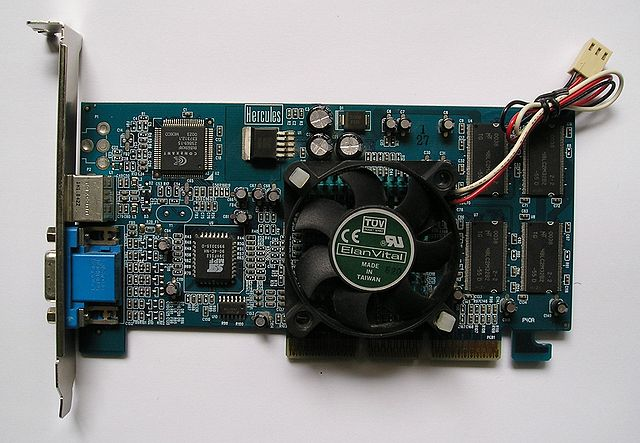
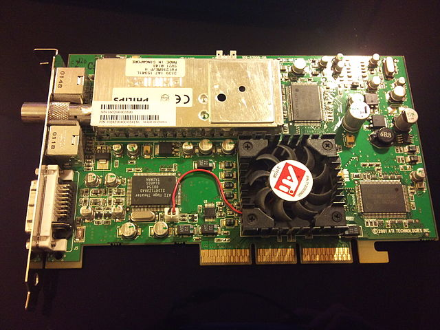

Veille informatique :
Veille Hardware:
Intel a été créé en 1968 par gordon Moore,Robert Noyce et Andrew Grove. AMD en 1969 W.Jerry sander et Edwin J Turney. Nvidia en 1993 par Jen-Hsun (actuel PDG), Chris A. Malachowsky et curtis Priem. Je fais une veille constante sur les nouveaux composants qui sortent principalement niveau CPU chez AMD et Intel , avec une comparaison de prix/perf dans un but d'optimisation la plus totale pour fabriquer une nouvelle machine , il est notament intéressant de comparer l'évolution du prix et des performances . Je fais aussi une veille constante sur les GPU principalement de la marque Nvidia , comparer avec les performances des GPU AMD en therme d'overclocking de performance en jeux et en applicatif .
Histoire et évolution:
nvidia a créé en 1999 GEFORCE la gamme encore utilisée aujourd'hui ,la geforce 256 elle utlisait directX 7 ,elle avait une fréquence de 120MHZ et la taille de sa mémoire était de 128 mbits actuellement sur les nouvelles on est sur du directX 12 , la 3080 par exemple le dernier modèle sorti en haut de gamme avant la gamme proffessionelle a une cadence processeur de 1,71GHz et a une mémoire de 10GO .  amd a créé RADEON le concurent théorique de NVIDIA en 2000 avec la sortie des radeon 7500 et 8500 , la 8500 possédait aussi d'une mémoire de 128 mbits car c'était la limite à l'époque , la 7200 avait une fréquence de 183MHz , pour une mémoire de 32 Mbits La loi de moore :

Avantages et Inconvénients
AVANTAGES:- Possibilité de prédire des catastrophes naturelles!
- automatisation de travaux pénibles.
- Rend la production industrielle plus simple.
- Pollution excessive
- Produit difficilement recyclable.
- la progression trop rapide fait que les développeurs optimisent de moins en moins leurs logciels .
- nécessité d'apprendre la sécurité sur internet pour tout le monde .
Utilisations des Proffessionel et des particuliers:
PRO:- Montage vidéos plus rapide et agréables
- de nouveaux outils à disposition comme la réalité virtuel
- c
- d
- Démocratisation du jeux vidéo
- Montage vidéos plus rapide et agréable
- pièces plus abordables
- d
Presse:
Un exemple de benchmark que l'on peut regarder pour se faire une idée de la synergie entre composant :pour un couple Carte Graphique /processeurs:
Pour une compaison entre Disque dur et SSD :
La plupart de la presse sur les composants informatiques sont des revues sur des sites en ligne , les medias traditionels ne sont absolument pas concernés par les progrets dans ce domaine et c'est assez rare de voir un article dessus . les sites les plus connus pour ça sont phonadroid ; cowcotland ; la page twitter de 01.net etc .